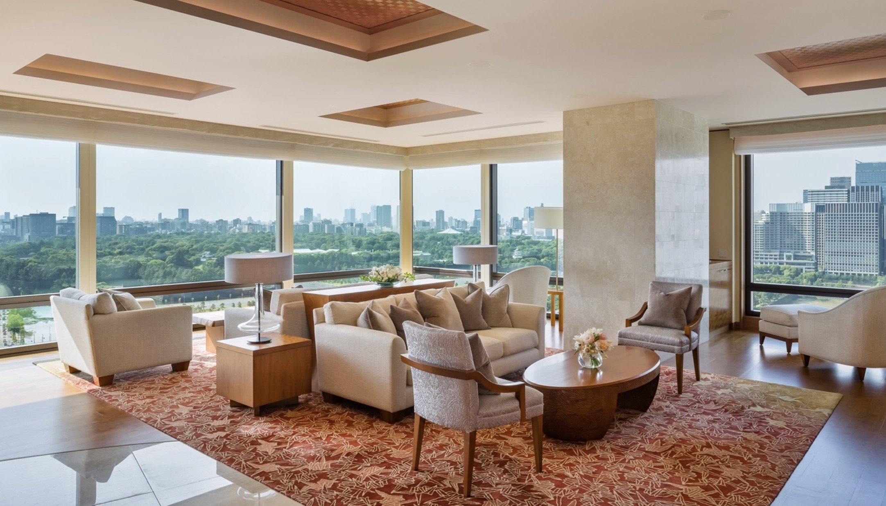

Classic, central Ginza location — excellent for first-time visitors who want to be in the middle of everything.
The Peninsula Tokyo is the first-timer's entry on my Japan shortlist: classic in style, Forbes Five-Star in execution, and planted in a central Ginza location that puts you in the middle of everything from the moment you step outside.
Tokyo intimidates on a map. The Peninsula's location dissolves most of that — the Imperial Palace gardens across the way, Ginza's shopping and dining at your feet, and the city's transit web directly below. For a first visit, that geography is worth more than any amenity.
It's the Tokyo half of the pairing I build most for first-time Japan itineraries, opposite The Ritz-Carlton, Kyoto — two classic, central, full-service bases that let the country itself be the spectacle.

The Ginza address. In the middle of everything, literally — the best first-visit location in Tokyo.
Classic Peninsula service. A grand-hotel tradition executed at Forbes Five-Star level.
The first-timer's anchor. The Tokyo base I use in more first-Japan itineraries than any other.
Classic, not cutting-edge. Travelers who want bold contemporary design should compare Mandarin Oriental — the Peninsula's appeal is timelessness.
Central means lively. This is the middle of the city; for hush above the fray, Aman Tokyo is my answer.
Let the location do the work. Base here and I'll build the days: sushi masterclasses, sumo mornings, and guides who know every stall.
For a first visit to Tokyo, location is the luxury — and nobody's is better.
Rates through me are identical to booking direct — the perks are not. As a Fora advisor, my clients receive a space-available upgrade, daily breakfast, and a hotel credit — plus my direct line to the team on property before and during your stay.
Check Availability